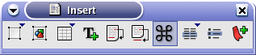
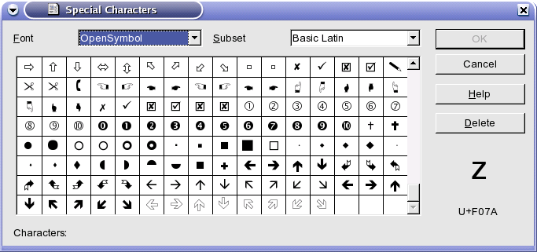

Ubacivanje simbola | |
| Nazad | OpenOffice.org Writer | Napred |

Ukoliko vam zatreba da u toku kucanja ubacite neki od znakova(№, ™, ®, ©, £...) koji se ne nalaze na tastaturi koristimo funkciju za ubacivanje simbola u padajućem meniju Insert / Special Character, ili na traci sa pomoćnim alatima klik na ikonicu.
Pa u prozoru odaberete u padajućoj listi Font iz kojeg ubacujete simbol a iz liste simbola odgovarajućeg fonta sam simbol koji ubacujete.

I kliknete na dugme .
| Nazad | Kući | Napred |
| Nabrajanje | Gore | Stranične oznake |